Bringing the concepts from the previous articles together, creating a program rooted in object-oriented programming can be a simple task, if you understand the principles of object-oriented programming, and how each principle can be used to accomplish a larger goal. Even though the definitions do provide a good starting point to understanding the principles, the best way to learn these concepts is through example and application.
Encapsulation is the concept that an object contains its own, private information. Within a class that is built around an object, the class contains public methods that are able to operate on the private information held within the objects private variables. The private information for an object is unique to that object, and even objects within the same class cannot directly access that information. In the calculator, we can see this concept with our Calculation class.
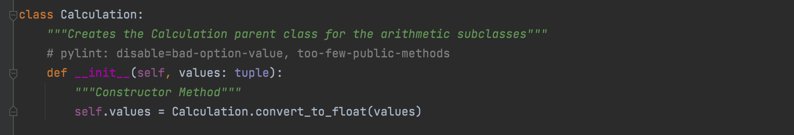The calculation class initiates an object with the private variable "values" which is instantiated by the user. Although there are a few more steps within the program to create an object, this represents encapsulation because the "values" is stored within "self" which is the object.
Abstraction is the concept that extends from encapsulation. An object should only be operable at a high level by the class it was created with. Within programming in general, there is a goal to achieve, and it does not matter how that goal is achieved. Abstraction allows all the mechanisms and high-level methods that achieve a goal to be hidden, while returning the expected result. Within the calculator program, I will walk through how abstraction works with the addition method.
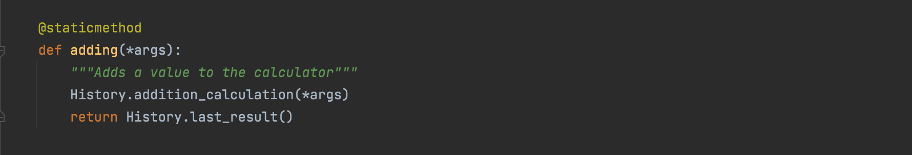From the Calculator class, passing a tuple the "adding" method will return the sum of the numbers passed to it. However, we can see that the calculator is more involved than just summing the values. There is a History class, and a method, "addition_calculation" that is not found inside the calculator. So let's follow this program and see where we end up.
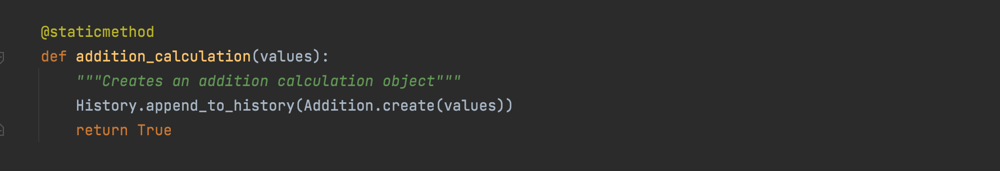When we follow the trail to the addition calculation of the History class, we can see that there is a method, "append_to_history", that adds the Addition.create(values) to a history. This is representative of the factory method, where each method has one task and that's it. The task of "append_to_history" is to store the object to a history that can be referenced later one, however, right now, we are concerned with where the addition calculation occurs. Next, we will follow this method to the Addition class.
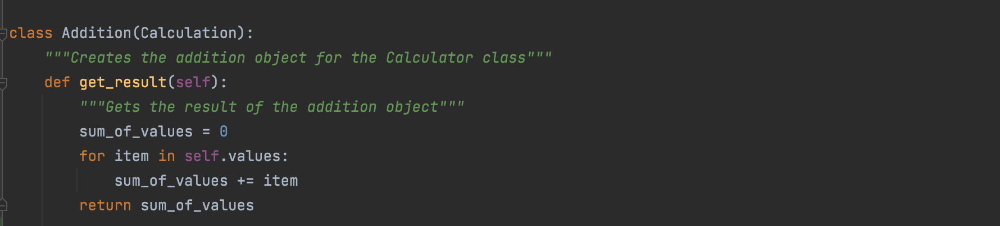Finally, we have reached the end of the trail. We can see that this object reaches its result by calling a methods through a series of classes, and eventually leads back to the Addition class to perform the summing operation. Then the result is returned through those same methods and the user can receive the result at the surface, The main idea here is that even though addition is a very simple operation, abstraction is how the facade, the calculator made a call to several methods of several classes and eventually reached back to the addition class to perform the summation, and that result is then returned to the user.
Inheritance within object-oriented programming is similar to how inheritence works within real life. Similar to how a child inherits the traits of the parents, a child class can inherit traits from a parent class within object-oriented programming! This allows a developer to reduce redundancy and allow a generic parent class share its methods and traits with multiple, more specific child classes. In our calculator, we can see this with our Calculation class and how it interacts with the children classes.
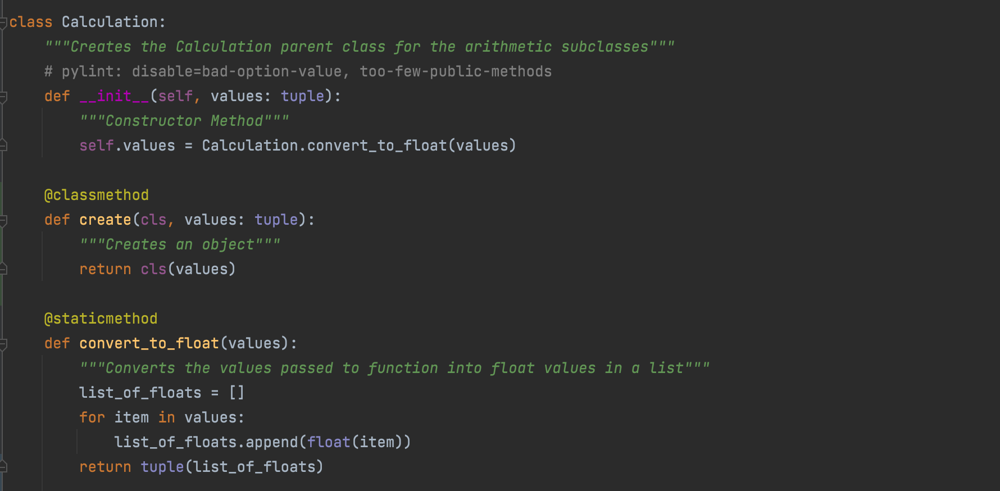Above, we can see the entire calculation class for the calculator. On its own, it doesn't particularly do too much. It instantiates an object, it has a factory method to create objects, and it converts a tuple of values into a list of floats. That is not particularly exciting, but it serves a very important function. It essentially prepares the values passed to it to be used by its children classes. Addition, Subtraction, Multiplication, and Division. Let's take a look at the addition class again.
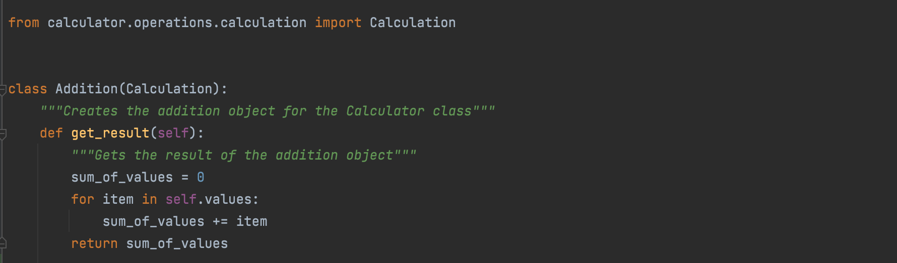when comparing the two classes, we can see a distinctive difference between the creation of the classes.
class Calculation:
class Addition(Calculation):
As we can see, the Addition class calls the Calculation class. This means that the addition class inherits the private variables and the methods of the Calculation class. The Addition class performs an operation on the attribute, "self.values" that was instantiated by the calculator class, that returns the summation of the values passed to it.
In this image above, we can see that the Addition class called upon the "create" method from the Calculation class to create an object with "self.values" This is a representation of Inheritance.
Polymorphism is a concept that is directly related to inheritance. Its the idea where a parent class has a method that interacts with the objects of the multiple classes in the same way, even if the child performs a different method on that data. The objects that were created by the child class all have a certain same quality and using a method on an object of that class will return a similar result among all the child classes. This concept is definitely more easily seen than explained. Within the calculator program, we can see this happen with the "get_result" method of the multiple child classes, and its interaction with the calculation class.
Once again, the Calculation class is shown above. As stated before, all the operations are children classes of the calculation class. But something special about them is seen below:
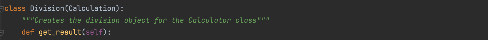 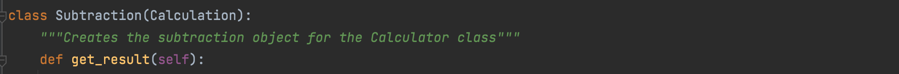 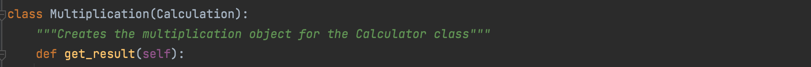All the children classes have the "get_result" function. But how is this possible? When taking a deeper look into what the get_result function does, we can see that this program uses polymorphism! Below are the expanded methods for addition and subtraction, so we can compare the "get_results" method. This can be extended for multiplication and division.
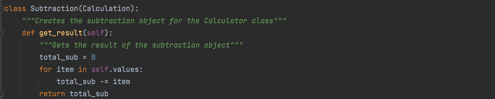 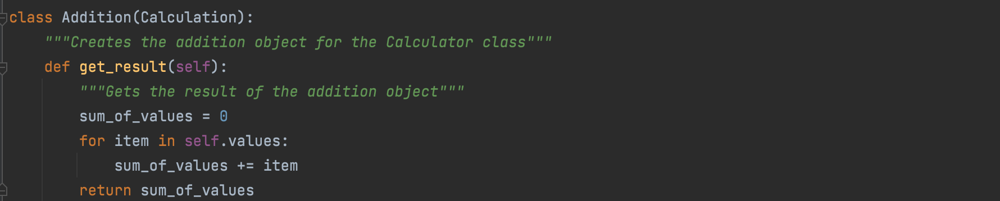The get_result method for both of these objects are unique to the class. They both functionally return the same thing: a value that is resulted at the end of an operation, however, the way they do so is different. The addition class adds the values together, while the subtraction class subtracts the values. This is an example of polymorphism because both Addition and Subtraction come from the same parent class, and both have a similar functioning method with the same name that operates on the "self.values" from the parent class. Whenever you use the "get_result" method, whether the object is an Addition object, or Subtraction object, or Division object, or Multiplication object, it will return the result of the operation of the values from the calculation class.
You can follow along on GitHub!